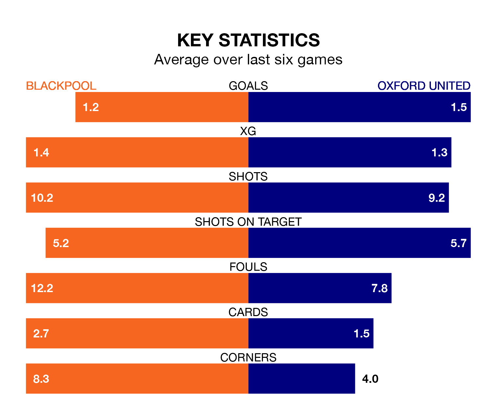

Oxford United travel to Blackpool on Saturday in EFL League One.
The visitors come into the game on the back of a draw in their last match, having tied with Reading 1-1 at home, with a goal from Mark Thomas Harris.
The Seasiders, meanwhile, lost their last match, 1-0 against Stevenage.
With 49 goals in 30 games so far this season, Oxford are scoring more than average in the league with 1.6 goals per game. And they are conceding fewer than average, letting in 37 goals at a rate of 1.2 per game.
Blackpool are also above average scorers, with 1.6 goals per game, compared to a league average of 1.3. They have conceded 1.2 goals per game.
In the last 10 years, Blackpool and Oxford have played each other on 11 occasions. They won four each, and they drew three times.
On average, the Seasiders scored 1.4 goals and the Us 1.1 in those matches.
Their last meeting was on October 21, when they played out a 1-1 draw.
With Daniel Grimshaw between the sticks, the Seasiders can rely on one of the league's safest pair of hands. He has kept 11 clean sheets in his 29 appearances this season, and only two other 'keepers – Portsmouth's Will Norris and Bolton Wanderers' Nathan Baxter – have been able to prevent the opposition scoring on more occasions in EFL League One.
In United's net, James Beadle has seven clean sheets in 25 games.
The Us are seventh in the table after 30 games, of which they have won 15 and drawn six, earning 51 points.
The hosts are one place behind the away team in eighth, with 13 wins and seven draws putting them on 46 points.
Blackpool are in mixed form in EFL League One, with three wins and a draw from their last six games.
With two wins and two draws over that period, Oxford's form is slightly worse – they have taken eight points from 18, compared to Blackpool's 10.
Updated: 11:18 (UTC), 08/02/24